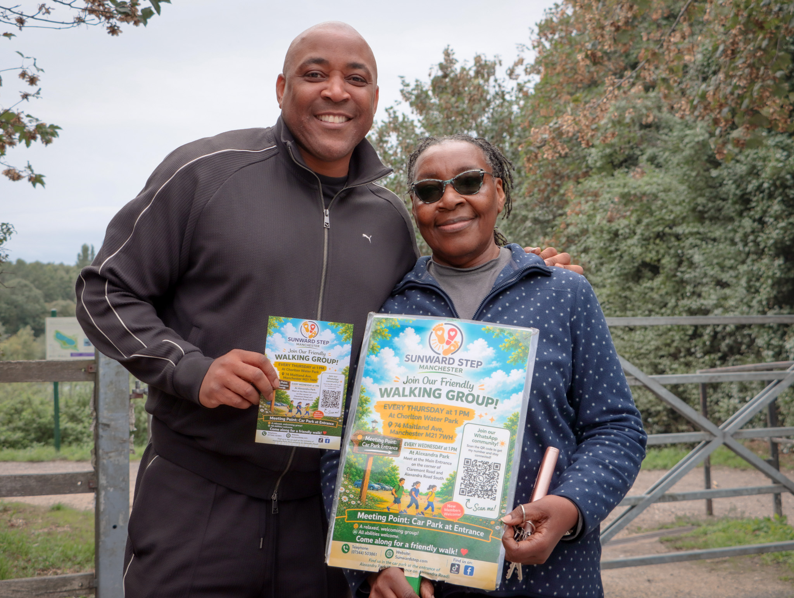

A local walking group for 40+
A brighter way to move, connect and feel less alone.
Sunward Step Manchester is a welcoming, low-pressure space to get outside, meet new people and enjoy community walks with gentle support and a friendly face.

A safe and welcoming space
Whether you’re coming along to enjoy the fresh air, chat with others, or simply have a calmer day connected to people nearby, Sunward Step is designed to feel gentle, warm and straightforward.
Weekly walks
A relaxed route with time to connect, pause and enjoy the walk at your own pace.
Real connection
We make space for conversation, laughter and support in a friendly, non-judgemental setting.
Gentle wellbeing
Moving together can help ease stress, build confidence and create moments of calm.
Free social events and support
From group walks to community events, the aim is to create regular, welcoming moments for people who may be feeling isolated or simply want a gentler place to connect.
- ✓Friendly, inclusive community events for adults looking for connection
- ✓Supportive atmosphere with no pressure to speak or participate in any particular way
- ✓Simple, welcoming spaces where people can feel a little more comfortable in themselves
Want to come along?
Sunward Step Manchester is open to adults looking for a gentle, supportive space to walk, take part in local community events and meet a few friendly faces.